File: 000120.gt.txt (if the image is defective, simply delete all Arabic text and the line will be excluded)
به إلي مصر فمات هناك .
File: 000121.gt.txt (if the image is defective, simply delete all Arabic text and the line will be excluded)
ثم ملك بعده يوقيم أخوه ، وهو أبو دانيال النبي ، وفي عصره سار بخت
File: 000122.gt.txt (if the image is defective, simply delete all Arabic text and the line will be excluded)
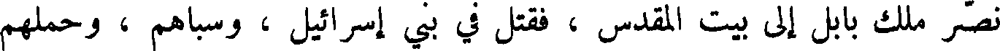
نصر ملك بابل ألي بيت المقدس ، فقتل في بني إسرائيل ، وسباهم ، وحملهم
File: 000123.gt.txt (if the image is defective, simply delete all Arabic text and the line will be excluded)
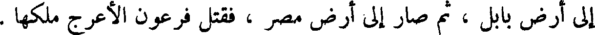
إلى أرض بابل ، ثم صار إلى أرض مصر ، فقتل فرعون الأعرج ملكها .
File: 000124.gt.txt (if the image is defective, simply delete all Arabic text and the line will be excluded)
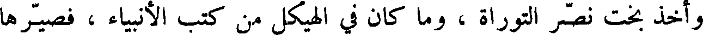
وأخذ بخت نصر التوراة ، وما كان في الهيكل من كتب الأنبياء ، فصيرها
File: 000125.gt.txt (if the image is defective, simply delete all Arabic text and the line will be excluded)
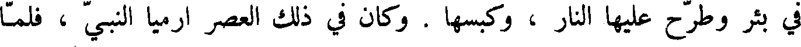
في بئر وطرح عليها النار ، وكبسها . وكان في ذلك العصر ارميا النبي ، فلما
File: 000126.gt.txt (if the image is defective, simply delete all Arabic text and the line will be excluded)
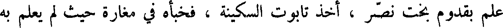
علم بقدوم بخت نصر ، أخذ تابوت السكينة ، فخبأه في مغارة حيث لم يعلم به
File: 000127.gt.txt (if the image is defective, simply delete all Arabic text and the line will be excluded)
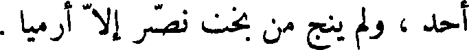
أحد ، ولم ينج من بخت نصر إلا أرميا .
File: 000128.gt.txt (if the image is defective, simply delete all Arabic text and the line will be excluded)
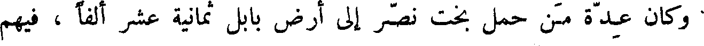
وكان عدة من حمل بخت نصر إلى أرض بابل ثمانية عشر ألفاً ، فيهم
File: 000129.gt.txt (if the image is defective, simply delete all Arabic text and the line will be excluded)
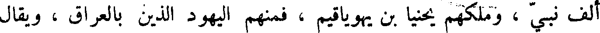
ألف نبي ، وملكهم يحينا بن بأن يهوياقيم ، فمنهم اليهود الذين بالعراق ، ويقال
File: 000130.gt.txt (if the image is defective, simply delete all Arabic text and the line will be excluded)
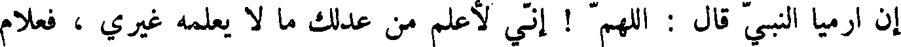
إن ارميا النبي قال : اللهم ! إني لأعلم من عدلك ما لا يعلمه غيري ، فعلام
File: 000131.gt.txt (if the image is defective, simply delete all Arabic text and the line will be excluded)
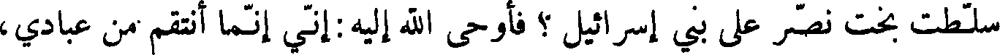
سلطت بخت نصر على بني إسرائيل ؟ فأوحى الله أليه : أني إنما انتقم من عبادي ،
File: 000132.gt.txt (if the image is defective, simply delete all Arabic text and the line will be excluded)
إذا عصوني ، بشرار خلقي .
File: 000133.gt.txt (if the image is defective, simply delete all Arabic text and the line will be excluded)
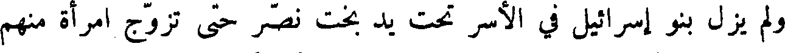
ولم يزل بنو إسرائيل في الأسر تحت يد بخت نصر حتى تزوج امرأة منهم
File: 000134.gt.txt (if the image is defective, simply delete all Arabic text and the line will be excluded)
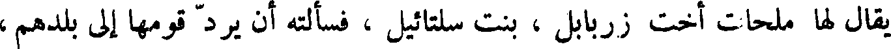
يقال لها ملحات زربابل ، بنت سلتائيل ، فسألته إن يرد قومها إلى بلدهم ،
File: 000135.gt.txt (if the image is defective, simply delete all Arabic text and the line will be excluded)
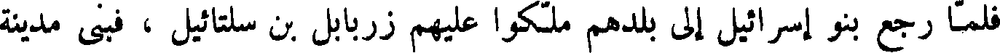
فلما رجع بنو إسرائيل إلى بلدهم ملكوا عليهم زربالبل بن سلتائيل ، فبنى مدينة
File: 000136.gt.txt (if the image is defective, simply delete all Arabic text and the line will be excluded)
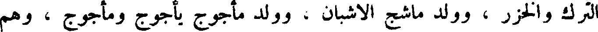
الترك والخزر ، وولد ماشج الاشبان ، وولد مأجوج يأجوج ومأجوج ، وهم
File: 000137.gt.txt (if the image is defective, simply delete all Arabic text and the line will be excluded)
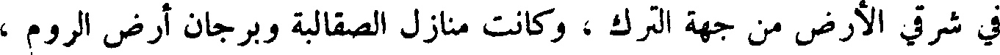
في شرقي الأرض من جهة الترك ، وكانت منازل الصقالبة وبرجان أرض الروم ،
File: 000138.gt.txt (if the image is defective, simply delete all Arabic text and the line will be excluded)
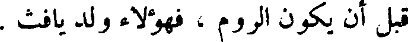
قبل أن يكون الروم ، فهؤلاء ولد يافث .
File: 000139.gt.txt (if the image is defective, simply delete all Arabic text and the line will be excluded)
وعاش نوح ، بعد خروجه من السفينة ، ثلاثمائة وستين سنة ، ولما حضرت
File: 000140.gt.txt (if the image is defective, simply delete all Arabic text and the line will be excluded)
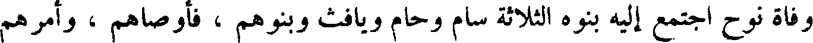
وفاة نوح اجتمع إليه بنوه الثلاثة سام وحام ويافث وبنوهم ، فأوصاهم ، وأمرهم
File: 000141.gt.txt (if the image is defective, simply delete all Arabic text and the line will be excluded)
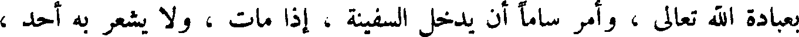
بعبادة الله تعالى ، وأمر ساماً أن يدخل السفينة ، إذا مات ، و لا يشعر به أحد ،
File: 000142.gt.txt (if the image is defective, simply delete all Arabic text and the line will be excluded)
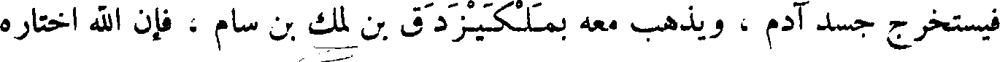
فيستخرج جسد آدم ، ويذهب معه بملكيز دق بن لمك بن سام ، فإن الله اختاره
File: 000143.gt.txt (if the image is defective, simply delete all Arabic text and the line will be excluded)
ليكون مع جسد آدم في وسط الأرض في المكان المقدس وقال له يا سام !
File: 000144.gt.txt (if the image is defective, simply delete all Arabic text and the line will be excluded)
انك إذا خرجت أنت وملكيز دق بعث الله معكما ملكا من الملائكة يدلكما على
File: 000145.gt.txt (if the image is defective, simply delete all Arabic text and the line will be excluded)
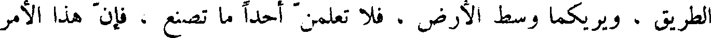
الطريق ، ويريكما وسط الأرض ، ولا تعلمن أحدا ما تصنع ، فإن هذا الأمر
File: 000146.gt.txt (if the image is defective, simply delete all Arabic text and the line will be excluded)
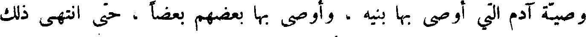
وصية آدم التي أوصى بها بنيه ، وأوصى بها بعضهم بعضا ، حتى انتهى ذلك
File: 000147.gt.txt (if the image is defective, simply delete all Arabic text and the line will be excluded)
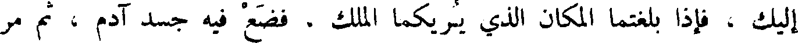
إليك ، فإذا بلغتما المكان الذي يريكما الملك ، فضع فيه جسد آدم ، ثم مر
File: 000148.gt.txt (if the image is defective, simply delete all Arabic text and the line will be excluded)
ملكيز دق ألا يفارقه ، ولا يكون له عمل إلا عبادة الله ، سبحانه وتعالى ، وأمره
File: 000149.gt.txt (if the image is defective, simply delete all Arabic text and the line will be excluded)
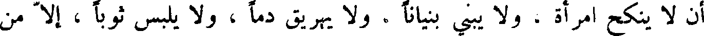
أن لا ينكح امرأة ، ولا يبني بنيانا ، ولا يهريق دما ، ولا يلبس ثوبا ، إلا من
To Save: `Ctrl+s`, make sure to choose `Webpage, complete`!